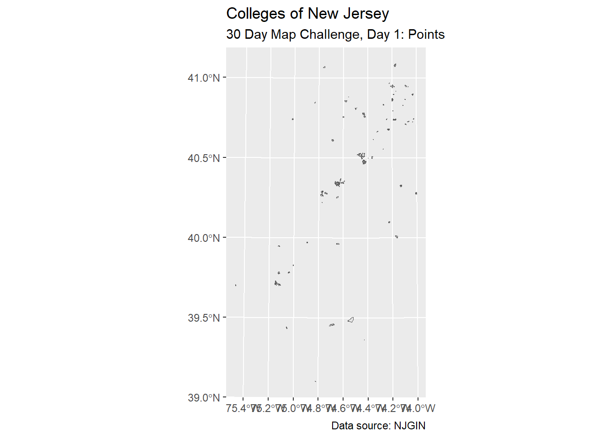
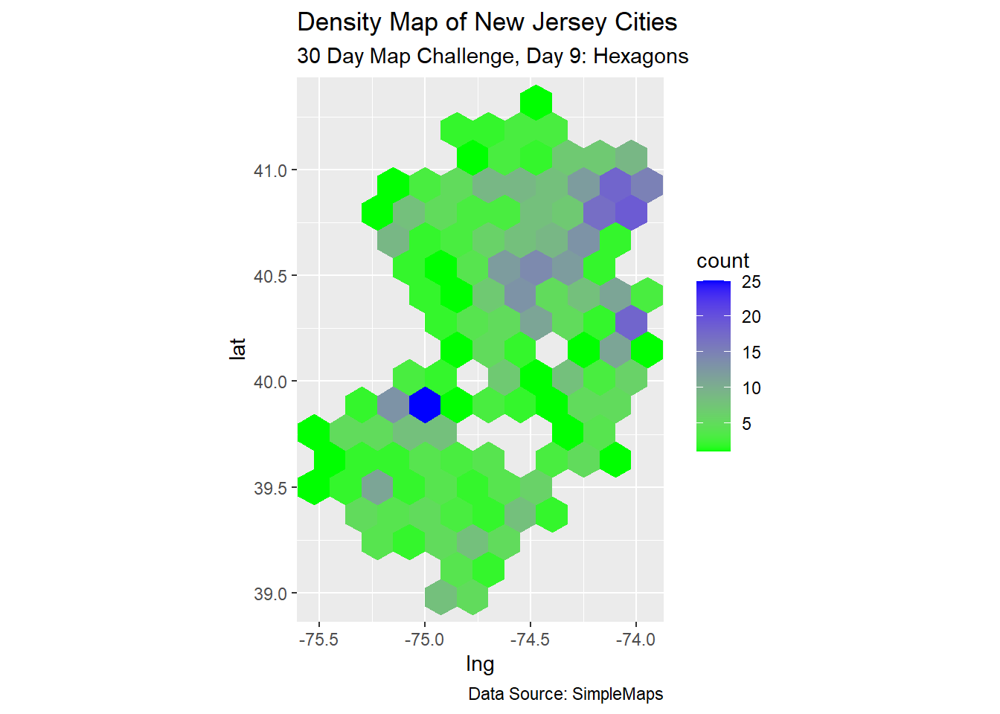

library("dplyr")
library("ggplot2")
library("ggtext")
library("patchwork")
library("sf")Introduction
Even though I have done the 30 Day Map Challenge each of the past two years, since data visualization is just a hobby for me, I feel like I start from scratch each time. This year, I decided to lean into that feeling and treat the month as production of a long blog post that likewise nearly starts from scratch.

I am interested in learning about the state of New Jersey, and we will perhaps get data from sites such as
Most of my work here will be performed with the ggplot2 and sf (“special features”) packages in the R programmer universe.
Day 1: Points
Initially, my searches for “New Jersey cities shapefile” and “New Jersey colleges shapefile” actually retrived polygons, so I am already taking liberties about what ‘points’ will mean here. I still intend on starting simple and working outward.
First, we load the shapefile. This data comes from the NJGIN (source)
nj_colleges <- sf::st_read("data/Colleges_and_Universities_in_NJ/Colleges_and_Universities_in_NJ.shp")Reading layer `Colleges_and_Universities_in_NJ' from data source
`C:\Users\freex\Documents\GitHub\quartoblog\posts\2023_map_challenge\data\Colleges_and_Universities_in_NJ\Colleges_and_Universities_in_NJ.shp'
using driver `ESRI Shapefile'
Simple feature collection with 78 features and 25 fields
Geometry type: MULTIPOLYGON
Dimension: XY
Bounding box: xmin: 218539.1 ymin: 97707.92 xmax: 631389.8 ymax: 822455.9
Projected CRS: NAD83 / New Jersey (ftUS)Now, we can make an initial map using ggplot2.
# make rough map
nj_colleges |>
ggplot() +
geom_sf()
Graph Labels
For now, I should get in the habit of labeling my graphs.
nj_colleges |>
ggplot() +
geom_sf() +
labs(title = "Colleges of New Jersey",
subtitle = "30 Day Map Challenge, Day 1: Points",
caption = "Data source: NJGIN")
Of course, this product lacks meaning without context, but that gives us something to look forward to in future days!
Day 2: Lines
Each 30 Day Map Challenge probably started with the same first 3 themes to emphasize one of the main ways to classify spatial data: points, lines, and polygons. Those notions affect how the data is stored in shapefiles.
Today, in the theme of building maps about New Jersey, let us simply plot the state itself. Once again, I will intentionally miss the academic meaning of the theme (“lines”); the data is of polygon type, but I am thinking of the state border as one line. This data comes from the NJGIN (source)
nj_state_shp <- sf::st_read("data/State_Boundary_of_NJ/State_Boundary_of_NJ.shp")Reading layer `State_Boundary_of_NJ' from data source
`C:\Users\freex\Documents\GitHub\quartoblog\posts\2023_map_challenge\data\State_Boundary_of_NJ\State_Boundary_of_NJ.shp'
using driver `ESRI Shapefile'
Simple feature collection with 1 feature and 9 fields
Geometry type: POLYGON
Dimension: XY
Bounding box: xmin: 191987.2 ymin: 7591.33 xmax: 659494.9 ymax: 919556.3
Projected CRS: NAD83 / New Jersey (ftUS)We can continue to adapt code and apply yesterday’s code to today’s shapefile.
nj_state_shp |> #changed the data set
ggplot() +
geom_sf() +
labs(title = "The State of New Jersey",
subtitle = "30 Day Map Challenge, Day 2: Lines",
caption = "Data source: NJGIN")Aesthetic Customization
Each day, I may challenge myself to add to the complexity. For now, let us emphasize the “line” in the picture by customizing the color.
nj_state_shp |>
ggplot() +
geom_sf(color = "blue", linewidth = 3) + #updated attributes
labs(title = "The State of New Jersey",
subtitle = "30 Day Map Challenge, Day 2: Lines",
caption = "Data source: NJGIN")Day 3: Polygons
Well, after actually using ‘polygon’ data in the previous two days, finally being advised to use polygons should be simple here. For mentally planning ideas for map making, one can think “regions” when dealing with polygon data. This data comes from the NJGIN (source)
nj_counties <- sf::st_read("data/County_Boundaries_of_NJ/County_Boundaries_of_NJ.shp")Reading layer `County_Boundaries_of_NJ' from data source
`C:\Users\freex\Documents\GitHub\quartoblog\posts\2023_map_challenge\data\County_Boundaries_of_NJ\County_Boundaries_of_NJ.shp'
using driver `ESRI Shapefile'
Simple feature collection with 21 features and 24 fields
Geometry type: MULTIPOLYGON
Dimension: XY
Bounding box: xmin: 193684.7 ymin: 34945.75 xmax: 657059.7 ymax: 919556.3
Projected CRS: NAD83 / New Jersey (ftUS)Notice that the geom_sf layer function works in the ggplot framework and will handle the polygon data well.
nj_counties |>
ggplot() +
geom_sf() +
labs(title = "The Counties of New Jersey",
subtitle = "30 Day Map Challenge, Day 3: Polygons",
caption = "Data source: NJGIN")Aesthetic Mapping
One of the joys of programming in R is the ease of color-coding by a categorical label. Here, we can create a rather impressive map by letting the software choose various colors for the counties.
First, we should get a sense of the variable names.
colnames(nj_counties) [1] "OBJECTID" "GLOBALID" "COUNTY" "COUNTY_LAB" "CO"
[6] "GNIS_NAME" "GNIS" "FIPSSTCO" "FIPSCO" "ACRES"
[11] "SQ_MILES" "POP2020" "POP2010" "POP2000" "POP1990"
[16] "POP1980" "POPDEN2020" "POPDEN2010" "POPDEN2000" "POPDEN1990"
[21] "POPDEN1980" "REGION" "Shape_Leng" "Shape_Area" "geometry" nj_counties |>
ggplot() +
geom_sf(aes(fill = COUNTY)) +
labs(title = "The Counties of New Jersey",
subtitle = "30 Day Map Challenge, Day 3: Polygons",
caption = "Data source: NJGIN") +
theme(legend.position = "none")Day 4: A Bad Map
If you’re following along, you might have wondered why I didn’t label the counties in the previous map. Here, for “Day 4: A Bad Map”, let me show you.
Centroids
The way that geom_text or geom_label work inside ggplot is that you need to indicate the aesthetics of locations (i.e. x and y coordinates) and labels. That is, while polygons are many points of data, we need to compute one point per polygon to tell the software where to put the labels. One way to compute those locations is to compute the centroids (and, long story short, there are several ways to compute centroids).
# Calculate the centroid of each hexagon to add the label
# https://stackoverflow.com/questions/49343958/do-the-values-returned-by-rgeosgcentroid-and-sfst-centroid-differ
centers <- data.frame(
st_coordinates(st_centroid(nj_counties$geometry)),
id=nj_counties$COUNTY)
nj_counties <- nj_counties |>
left_join(centers, by = c("COUNTY" = "id"))Now, the data frame has convenient “X” and “Y” coordinates (which happen to be capital letters in these default codes).
Aesthetic Labeling
Now let us see how geom_label works with our map so far.
nj_counties |>
ggplot() +
geom_sf(aes(fill = COUNTY)) +
geom_label(aes(x = X, y = Y, label = COUNTY)) +
labs(title = "The Counties of New Jersey",
subtitle = "30 Day Map Challenge, Day 4: A Bad Map",
caption = "Data source: NJGIN") +
theme(legend.position = "none")There are certainly ways to improve the readability and beauty of this map, and we might explore those ways in future days.
Day 5: Analog Map
The intent of the ‘Analog Map’ theme is to encourage us map making nerds to draw a map “in real life” (or, “in meat space”). However, there is an idea that has been on my mind, so I want to try to overlap shapefiles of New Jersey and California—that is, closer to the word “analogy”.
Today’s shapefile for the state of California comes from the California Open Data Portal.
ca_state_shp <- sf::st_read("data/ca-state-boundary/CA_State_TIGER2016.shp")Reading layer `CA_State_TIGER2016' from data source
`C:\Users\freex\Documents\GitHub\quartoblog\posts\2023_map_challenge\data\ca-state-boundary\CA_State_TIGER2016.shp'
using driver `ESRI Shapefile'
Simple feature collection with 1 feature and 14 fields
Geometry type: MULTIPOLYGON
Dimension: XY
Bounding box: xmin: -13857270 ymin: 3832931 xmax: -12705030 ymax: 5162404
Projected CRS: WGS 84 / Pseudo-MercatorCoordinate Reference Systems
Long story short, each map of the 3D Earth is projected onto a 2D plane, but there are ways to perform that projection (with goals such as maintaining areas or shapes as well as possible). For our purposes, the work here will be easier if both of the California and New Jersey shapefiles use the same projection.
# check CRS
st_crs(ca_state_shp)[1]$input
[1] "WGS 84 / Pseudo-Mercator"st_crs(nj_state_shp)[1]$input
[1] "NAD83 / New Jersey (ftUS)"We can observe that the projection systems are not the same. Hopefully, the simplest fix is to simply re-project the CRS of the California shapefile into the CRS of the New Jersey shapefile.
# set CRS
# st_crs(ca_state_shp) <- st_crs(nj_state_shp)
ca_state_shp <- st_transform(ca_state_shp, st_crs(nj_state_shp))
# verify
st_crs(ca_state_shp)[1]$input
[1] "NAD83 / New Jersey (ftUS)"So far, here is the juxtaposition.
nj_state_shp |>
ggplot() +
geom_sf() +
geom_sf(data = ca_state_shp)Coordinates
For some of the math I intend on carrying out, I will need to manipulate the latitude and/or longitude values (i.e. the x and y coordinates). We can extract coordinates using the st_geometry command.
ca_sfc <- st_geometry(ca_state_shp) #extracts geom column
nj_sfc <- st_geometry(nj_state_shp) #extracts geom columnNext, I want the median longitude value for each shapefile. I am going to brute force my way through the list data type.
# ca_long_median_x <- median(ca_sfc[[1]][[7]][[1]][,1])
# nj_long_median_x <- median(nj_sfc[[1]][[1]][,1])
# median_difference_x <- nj_long_median_x - ca_long_median_x
#
# ca_long_median_y <- median(ca_sfc[[1]][[7]][[1]][,2])
# nj_long_median_y <- median(nj_sfc[[1]][[1]][,2])
# median_difference_y <- nj_long_median_y - ca_long_median_yMaybe centroids will work better?
ca_centroid <- st_coordinates(st_centroid(ca_state_shp$geometry))
nj_centroid <- st_coordinates(st_centroid(nj_state_shp$geometry))
long_diff <- nj_centroid[1] - ca_centroid[1]
lat_diff <- nj_centroid[2] - ca_centroid[2]Translation
Now, I want to translate the Calfornia shape over to the New Jersey shape. Some social media posts were clever by aligning San Francisco with New York City, but my interest came from maintaining latitude values (which might help me understand weather and climate), so that will take place with the zero in c(median_difference, 0).
# ca_shifted_sfc <- ca_sfc + c(median_difference_x, 0)
# ca_shifted_shp <- st_set_geometry(ca_state_shp, ca_shifted_sfc)
# st_crs(ca_shifted_shp) <- st_crs(nj_state_shp) #ensure same CRS# using the centroids instead
ca_shifted_sfc <- ca_sfc + c(long_diff, lat_diff)
ca_shifted_shp <- st_set_geometry(ca_state_shp, ca_shifted_sfc)
st_crs(ca_shifted_shp) <- st_crs(nj_state_shp) #ensure same CRSSo far, here is the juxtaposition. I decided to place the New Jersey layer on top of the Calfornia layer.
ca_shifted_shp |>
ggplot() +
geom_sf() +
geom_sf(data = nj_state_shp)I ended up maintaining the areas, but alas, not the latitude values.
Markdown Titles
With just two objects in one map, one neat way of labeling the objects is to change the text colors in the title using the ggtext package.
title_string <- "<span style='color:brown'><b>California</b></span> and <span style='color:blue'><b>New Jersey</b></span>"
ca_shifted_shp |>
ggplot() +
geom_sf(color = "brown", fill = "brown") +
geom_sf(data = nj_state_shp, color = "blue", fill = "blue") +
labs(title = title_string,
subtitle = "30 Day Map Challenge\nDay 5: Analog Map",
caption = "Data sources: NJGIN\nand CA Open Data Portal") +
theme(plot.title = element_markdown()) #need ggtext hereDay 6: Asia
Several of the themes in this year’s 30 Day Map Challenge are the names of the continents. For this, I think I will answer the thought “New Jersey is close to the size of ____”.
The following shapefile can be found in the Princeton University Library’s Digital Maps and Geospatial Data collection.
# https://maps.princeton.edu/catalog/stanford-yt530bw9654
kuwait_shp <- sf::st_read("data/Kuwait_data/KWT_adm1.shp")Reading layer `KWT_adm1' from data source
`C:\Users\freex\Documents\GitHub\quartoblog\posts\2023_map_challenge\data\Kuwait_data\KWT_adm1.shp'
using driver `ESRI Shapefile'
Simple feature collection with 6 features and 12 fields
Geometry type: MULTIPOLYGON
Dimension: XY
Bounding box: xmin: 46.55062 ymin: 28.52461 xmax: 48.65403 ymax: 30.08444
Geodetic CRS: WGS 84We can store maps as variables in the R programming language.
kuwait_map <- kuwait_shp |> ggplot() + geom_sf()
nj_map <- nj_state_shp |> ggplot() + geom_sf()Patchwork
Using the patchwork package, we can place the maps side-by-side.
# patchwork
kuwait_map + nj_map +
plot_annotation(
title = "Kuwait is close to the size of New Jersey",
subtitle = "30 Day Map Challenge, Day 6: Asia",
caption = "Data sources: NJGIN and Princeton Univ"
)Day 8: Africa
The country in Africa that is closest to the size of New Jersey is Eswatini. Let us get that shapefile (source).
eswatini_shp <- sf::read_sf("data/swz_admbnda_cso2007_shp/swz_admbnda_adm0_CSO_2007.shp")I am simply adapting code from before.
eswatini_map <- eswatini_shp |> ggplot() + geom_sf()# patchwork
eswatini_map + nj_map +
plot_annotation(
title = "Eswatini is close to the size of New Jersey",
subtitle = "30 Day Map Challenge, Day 8: Africa",
caption = "Data sources: NJGIN and\nHumanitarian Data Exchange"
)Day 9: Hexagons
In years past, I combined state-by-state data with an established hexagon map of the United States. Today, I am trying instead to apply a hexagon-cell heat map to some data.
Whelp, I found some great data sets that would have been great here, but they were hosted on sites that did not actually have download links for open source use. Instead, I will use a list of US cities found at https://simplemaps.com/data/us-cities.
us_cities_df <- readr::read_csv("data/simplemaps_uscities/uscities.csv")Rows: 30844 Columns: 17
── Column specification ────────────────────────────────────────────────────────
Delimiter: ","
chr (9): city, city_ascii, state_id, state_name, county_fips, county_name, s...
dbl (6): lat, lng, population, density, ranking, id
lgl (2): military, incorporated
ℹ Use `spec()` to retrieve the full column specification for this data.
ℹ Specify the column types or set `show_col_types = FALSE` to quiet this message.Now we can make a density map of New Jersey cities (note: density map of the city names, not of the human populations).
us_cities_df |>
filter(state_id == "NJ") |>
ggplot(aes(x = lng, y = lat)) +
geom_hex()Square Grid
The viewing window seems a bit skewed, and there is a lot of empty space. Next, I will
- apply a
coord_equallayer - change the
geom_hexbinwidth (by guess-and-check) - apply slightly more divergent colors
us_cities_df |>
filter(state_id == "NJ") |>
ggplot(aes(x = lng, y = lat)) +
coord_equal() +
geom_hex(binwidth = c(0.15, 0.15)) +
labs(title = "Density Map of New Jersey Cities",
subtitle = "30 Day Map Challenge, Day 9: Hexagons",
caption = "Data Source: SimpleMaps") +
scale_fill_gradient(low = "green", high = "blue")
Day 10: North America
While pointing out New Jersey in a larger map of North America subdivisions (states, provinces) makes sense here, I am going to contine my silly comparison of land mass sizes.
Among countries in North America, the one closest in size to New Jersey is El Salvador.
el_salvador_shp <- sf::read_sf("data/slv_adm_gadm_2021_shp/slv_admbnda_adm0_gadm_20210204.shp")I am once again adapting code from before.
el_salvador_map <- el_salvador_shp |> ggplot() + geom_sf()# patchwork
el_salvador_map + nj_map +
plot_annotation(
title = "El Salvador is close to the size of New Jersey",
subtitle = "30 Day Map Challenge, Day 10: North America",
caption = "Data sources: NJGIN and\nHumanitarian Data Exchange"
)